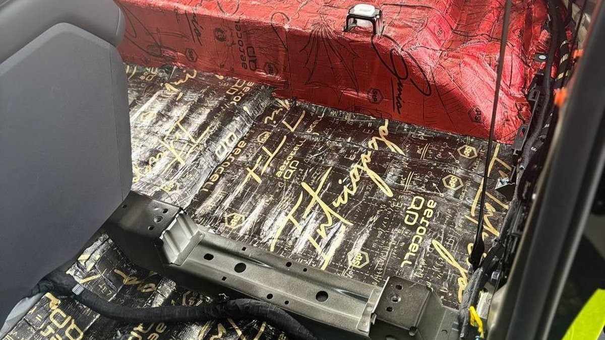

Воскресенье, вы возвращаетесь в Ярославль из Вологды по М8. Темно с пяти вечера, на спидометре стабильные девяносто, и всю дорогу в салоне стоит ровное «у-у-у», которое никуда не уходит. Его не слышно как отдельный звук, оно просто давит. Ребёнок сзади просит сделать мультик громче, вы кричите жене через подлокотник, а к вечеру голова тяжёлая, хотя вы почти не обгоняли.
Этот гул почти всегда живёт внизу. Шумоизоляция пола автомобиля и багажника убирает его лучше, чем любая другая зона, но это самая незаметная работа: всё, что сделано, скрыто под ковром и сиденьями. В статье – откуда берётся гул, что именно происходит с полом и багажником, как их обрабатывают и как понять, что работа сделана честно.

Откуда берётся гул на скорости
Пол машины – самая большая металлическая поверхность в салоне. Снизу на него работают сразу несколько источников: шины катятся по асфальту, по днищу бьёт поток воздуха, сзади звучит выхлопная система, от коробки и карданного вала (если он есть) идёт вибрация в тоннель. Подвеска передаёт удары от каждого стыка.
Тонкий металл пола получает эту энергию и начинает колебаться. Большая плоская панель между рёбрами жёсткости раскачивается, как мембрана динамика, и излучает низкий звук прямо в салон. Это и есть гул: частоты низкие, ухо их плохо локализует, поэтому кажется, что шумит «вся машина».
Есть и второй путь – воздушный. Шелест шин и звук выхлопа проходят через металл, через технологические отверстия и заглушки, через щели вокруг жгутов проводов. На трассе оба пути складываются, и чем выше скорость, тем сильнее гудит. Зимой к этому добавляются шипы и снежная каша, которая бьёт в днище, поэтому одна и та же машина в Ярославле в декабре гудит заметно сильнее, чем в июле. Многие замечают гул впервые именно с переходом на зимнюю резину и думают, что что-то сломалось.
Почему багажник гудит громче, чем кажется
Багажник собирает самые громкие источники в одном месте. Под полом багажника стоят задние колёса, глушитель и топливный бак. Ниша запасного колеса – это глубокая металлическая ванна с плоским дном, и она резонирует, как барабан. Если запаски нет, а вместо неё органайзер или пустота, барабан звучит ещё лучше.
У седанов багажник отделён от салона спинкой сидений и полкой, и часть шума остаётся там. У хэтчбеков, универсалов и кроссоверов багажник и салон – одно пространство. Задние арки, пол багажника и пятая дверь гудят прямо за головой задних пассажиров. Поэтому для таких кузовов шумоизоляция багажника идёт в паре с полом салона: обработать одно без другого – всё равно что закрыть одно окно из двух.
Отдельно стоит пятая дверь. Это большая полость с тонкой внешней панелью, и в ней тоже гуляет звук. Плюс замок, тяги и пластиковая обивка, которые на морозе начинают стучать.
Как делают шумоизоляцию пола автомобиля
Работа большая, и почти вся она уходит на разборку. Что происходит по шагам.
1. Снимают сиденья, пороги, нижние панели салона и ковёр. Ковёр в машине цельный, его вынимают одним куском, чтобы потом он лёг на место без складок.
2. Осматривают металл. На полу многих машин с завода лежат тонкие битумные вставки. Если они держатся плотно, их обычно оставляют и клеят поверх. Отслоившиеся снимают, иначе новый материал ляжет на пустоту.
3. Пол очищают и обезжиривают. Зимой это особенно важно: под ковром часто находят песок, соль с обуви и влагу.
4. На металл клеят вибропоглотитель и прикатывают роликом, чтобы не осталось воздушных пузырей. Основное внимание – плоским участкам между рёбрами, тоннелю и зоне под задними сиденьями, ближе к аркам.
5. Сверху кладут шумопоглотитель с закрытыми порами. Он не впитывает воду, которая неизбежно попадает на пол с ботинок.
6. Салон собирают, проверяя все клипсы и крепления. Сломанная клипса потом даст скрип, который легко принять за плохую шумоизоляцию.
Важная деталь: материалом не перекрывают дренажные пробки, не пережимают жгуты проводов и следят, чтобы ковёр и обшивка встали на штатные места. Слишком толстый слой под ковром приподнимает его, и педали оказываются не там, где привыкла нога.

Шумоизоляция пола багажника и ниши запаски
В багажнике логика та же, но есть свои правила.
- Ниша запаски получает вибропоглотитель на дно и стенки. Именно она даёт самый заметный эффект в багажнике, потому что перестаёт работать как барабан.
- Пол багажника и боковины закрывают виброслоем, затем шумопоглотителем. Задние арки со стороны багажника обрабатывают по доступным участкам.
- Материал только с закрытыми порами. В багажник ставят мокрые сумки, ёлку, лыжи, канистру со стеклоомывайкой. Губка под полом впитает всё это и будет пахнуть до весны.
- Пятая дверь у кроссоверов и хэтчбеков: виброслой на внешнюю панель изнутри, антискрип на крепления обивки. Здесь же проверяют, не стучит ли замок.
- Пластиковые панели и полка. На стыки кладут антискрип, иначе после тишины на трассе станут слышны сверчки, которых раньше заглушал гул.
Шумоизоляция салона автомобиля: где пол в общей картине
Пол и багажник – основа. Именно они отвечают за гул на трассе, поэтому если бюджет ограничен, разумно начинать с них, а двери и крышу делать вторым этапом. Двери убирают шум соседних машин сбоку и помогают музыке, крыша – шум дождя и гул сверху. Но если пол не сделан, то после обработки дверей и крыши гул на скорости почти не изменится.
Арки логично делать вместе с полом: внутренняя часть арки – это продолжение пола, и разбирать салон дважды невыгодно. Капот и моторный щит – отдельный разговор, к гулу на трассе они имеют малое отношение.
Ошибки, из-за которых гул возвращается
- Положить шумопоглотитель прямо на металл без виброслоя. Панель как гудела, так и гудит, только чуть глуше. Пена не гасит колебания металла, это работа вибропоглотителя.
- Пропустить тоннель и зону под задним сиденьем. Там проходит выхлоп и стоят задние колёса, и именно оттуда идёт значимая часть гула.
- Забыть нишу запаски. Пол салона тихий, а сзади продолжает гудеть барабан.
- Клеить на холодный металл. Работа в неотапливаемом гараже в ярославский мороз – верный способ получить материал, который отойдёт через месяц. Клей и вибропоглотитель любят тепло, поэтому зимой пол делают только в тёплом боксе.
- Собрать салон на сломанные клипсы. Пол тихий, но ковёр и пороги скрипят, и кажется, что шумоизоляция не работает.
Почему работу не видно и как это проверить
Вы забираете машину, а снаружи и внутри всё как было: тот же ковёр, те же сиденья. Разница только на ходу. Это делает шумоизоляцию автомобиля удобной для недобросовестных мастеров: положить один слой вместо двух, пропустить нишу запаски, не обезжирить металл – и никто не узнает до весны.
Что поможет:
- Фото каждого этапа и слоя. Голый металл, первый слой, второй, сборка. По таким фото видно, какая площадь закрыта и какие материалы ушли.
- Названия материалов. Попросите назвать, что пойдёт на виброслой, а что на шумопоглотитель, и какой из них с закрытыми порами.
- Свой замер. Приложение-шумомер на одном и том же участке трассы с одной скоростью до и после. Прибор не лабораторный, но разницу покажет.
Частые вопросы
Насколько тише станет после пола и багажника? Уходит главное – низкий гул на трассе, который утомляет сильнее всего. Шелест шин станет глуше, разговаривать и слушать музыку будет легче. Полной тишины не будет, шипы и ветер останутся.
Можно сделать только багажник? Можно, если он гудит сильнее всего, например у кроссовера с пустой нишей запаски. Но на трассе основной гул идёт через пол салона, поэтому эффект будет частичным.
Не начнёт ли пол гнить под шумоизоляцией? Нет, если металл подготовлен, а сверху лежит материал с закрытыми порами. Гниёт под губкой с открытыми порами, которая держит воду.
Сильно ли вырастет расход топлива? Если не клеить вибропоглотитель сплошь в несколько слоёв, прибавка веса небольшая и на расходе почти не заметна.
Сколько стоит шумоизоляция пола и багажника? Цену считают по машине: седан или кроссовер, есть ли пятая дверь, сколько слоёв, будут ли арки вместе с полом и что лежит с завода. Поэтому расчёт после осмотра.
Где сделать пол и багажник в Ярославле
Студия «Звук на Волге», Ярославль, проспект Октября, 82б. Пн–пт 8:30–20:00, сб–вс 10:00–19:00. Монтаж идёт вне зоны видимости клиента, и мы делаем фотоотчёт каждого этапа и каждого слоя материала, так что скрытая под ковром работа у вас перед глазами. Стоимость считаем индивидуально по вашей машине.
Подробнее и запись: шумоизоляция пола и багажника в Ярославле. Телефон +7 902 220-75-55, сообщения в ВК: vk.me/avtostil_yaroslavl.
Если вы знали нас как «Автостиль», это мы. Студия обновилась и взяла имя по делу и по городу: «Звук на Волге». Адрес тот же.